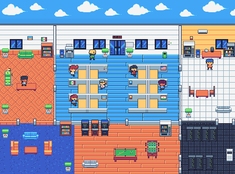
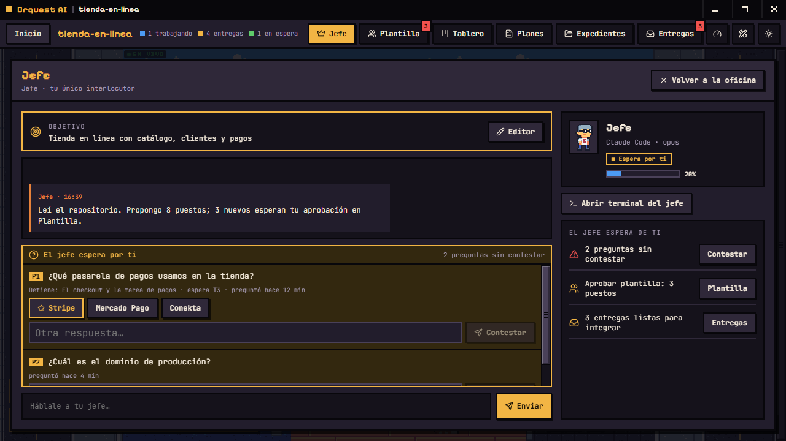
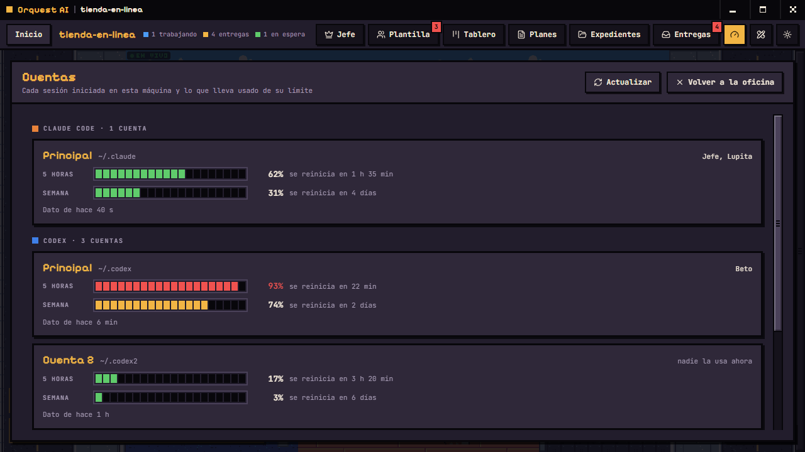

Orquest AI
Tus agentes de código, trabajando en una oficina que puedes ver.
Claude Code, Codex y otras CLIs de IA se integran como empleados de un estudio en pixel art. Tú te comunicas solo con el jefe: él forma el equipo, asigna las tareas, revisa las entregas y solicita tu aprobación antes de integrar a tu rama.

Cómo funciona
- Contratas al jefe
Eliges la CLI que lo ejecuta, le asignas un nombre y defines el objetivo del proyecto.
- El jefe propone la plantilla
Define los puestos necesarios y el proveedor y modelo de cada uno. Tú apruebas, ajustas o descartas.
- Cada empleado en su oficina
Cada empleado trabaja en una copia aislada del repositorio, sin interferir con el trabajo de los demás.
- El jefe revisa, tú integras
Ningún cambio llega a tu rama sin la revisión del jefe y tu aprobación.
Qué incluye

Un solo interlocutor.
Te comunicas únicamente con el jefe. Lo que requiere de ti queda registrado como pregunta pendiente, con respuestas sugeridas, hasta que la atiendas.

Tablero con dependencias.
Las tareas se encadenan por dependencias: una tarea que depende de otra no inicia hasta que la primera se integra.

Uso de tus cuentas.
Consulta cuánto llevas usado del límite de cada cuenta y elige con cuál trabaja cada empleado.
Permisos por puesto
Cada puesto cuenta con un manual que define qué puede editar y qué comandos ejecuta sin solicitar confirmación. Orquest AI no omite los permisos de ninguna CLI.
Memoria persistente
Cuando un agente agota su contexto, redacta un traspaso, reinicia su sesión y retoma el trabajo a partir de su bitácora. Quien ocupe el puesto después también la recibe.
Expedientes
Registro del desempeño de cada proveedor y modelo en tus proyectos: entregas integradas al primer intento y rechazos. El jefe lo consulta antes de proponer una contratación.
Ejecución local
No existe un servidor de Orquest AI. El tablero se almacena en una base de datos local y los agentes utilizan las sesiones que ya tienes iniciadas en cada CLI.
CLIs compatibles
Orquest AI no incluye modelos: ejecuta las CLIs que ya tienes instaladas y con sesión iniciada. Requiere al menos una, además de git.
- Claude CodeLa de mayor cobertura de pruebas
- CodexProbada en uso real
- AntigravityProbada en uso real
- OpenCodeProbada en uso real
- Command CodeIntegrada, con pruebas limitadas
- KimiIntegrada, con pruebas limitadas
- GrokIntegrada, con pruebas limitadas
Requisitos
Con git y una CLI ya puedes abrir la oficina. Lo demás es opcional: herramientas que tus agentes aprovechan si las tienes instaladas en tu CLI.
Lo indispensable
- Git
- Al menos una CLI compatible, con sesión iniciada
- Windows 10 u 11 (macOS y Linux, en pruebas)
- Node 22.5 o superior, solo si compilas desde el código
Recomendado, por puesto
- DISEÑO
- Pencil
Quien ocupa el puesto de diseño dibuja las pantallas en un lienzo y frontend las construye a partir de ahí.
- QA
- Playwright
Abre la aplicación en un navegador, recorre el flujo como lo haría un usuario y guarda capturas como evidencia.
- REPOSITORIO
- GitHub CLI
Consulta issues y prepara Pull Requests desde la terminal.
Descargar
Versión v0.1.0, preliminar. Los instaladores aún no están firmados, por lo que Windows y macOS muestran una advertencia al abrirlos. Los de macOS y Linux se generan de forma automática y todavía no se han verificado manualmente; si los usas, agradecemos tus comentarios.
Todas las versiones · o compila desde el código fuente: npm install && npm run dev
Código abierto
Orquest AI es software libre bajo licencia Apache 2.0. Las contribuciones se reciben mediante Pull Request y cada cambio es revisado por el autor del proyecto.
Áreas donde puedes contribuir
- Pruebas en macOS y Linux
- Integración completa de las CLIs pendientes
Apoya el proyecto
Orquest AI es gratis. Si quieres apoyarlo, o prefieres que te acompañe a instalarlo, aquí puedes hacerlo.
-
Invítame un café
1 USD · por café
Si Orquest AI te ahorra tiempo, un café ayuda a que siga avanzando. No desbloquea nada: todo es gratis y de código abierto.
Invitar un café -
Asesoría 1 a 1
20 USD · 2 horas
Por videollamada: instalamos Orquest AI y tus CLIs, abrimos tu primer proyecto y te explico cómo trabaja la oficina.
Pagas ahora y te contacto en menos de 24 horas, por correo o teléfono, para acordar día y hora. Si no logramos agendar, te devuelvo el pago.
Reservar asesoría